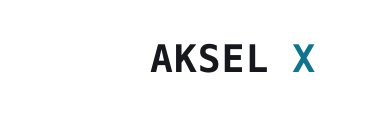

Uma identidade de engenharia: cada traço medido ao milímetro. O X lido como instrumento de calibração, para marcas de software, sistemas, automação e dados onde exatidão é o produto.


| Uso | Família | Estilo |
|---|---|---|
| Logotipo / títulos | IBM Plex Mono | Semibold 600, letter-spacing −1 |
| Corpo / interface | Inter | Regular 400, Medium 500 |
| Dados, métricas, código | IBM Plex Mono | Regular 400 |
PROPOSTA_02/ akselx_horizontal_color.svg — logotipo horizontal colorido akselx_vertical_color.svg — logotipo vertical (empilhado) akselx_simbolo_color.svg — símbolo isolado akselx_mono_black.svg — versão monocromática preta akselx_mono_white.svg — versão monocromática branca akselx_favicon_color.svg — favicon/símbolo reduzido